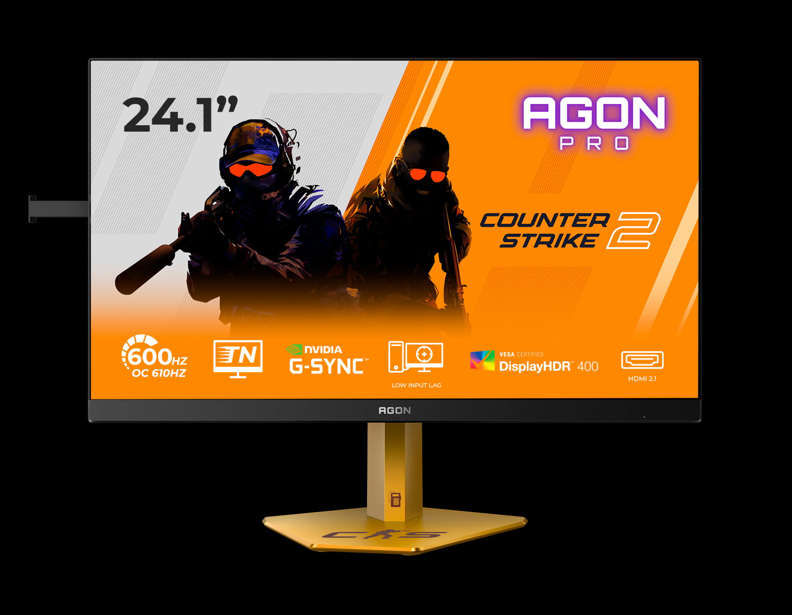
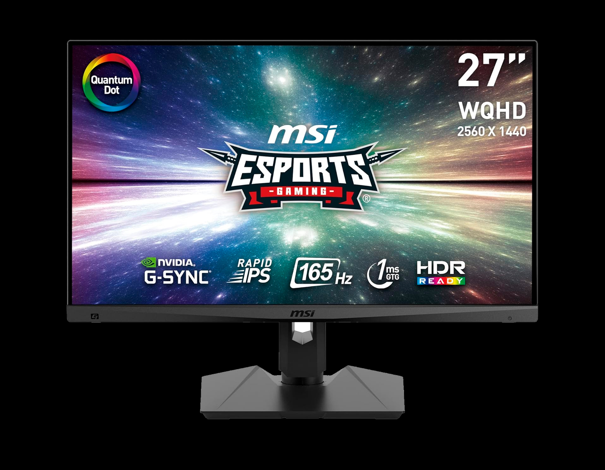
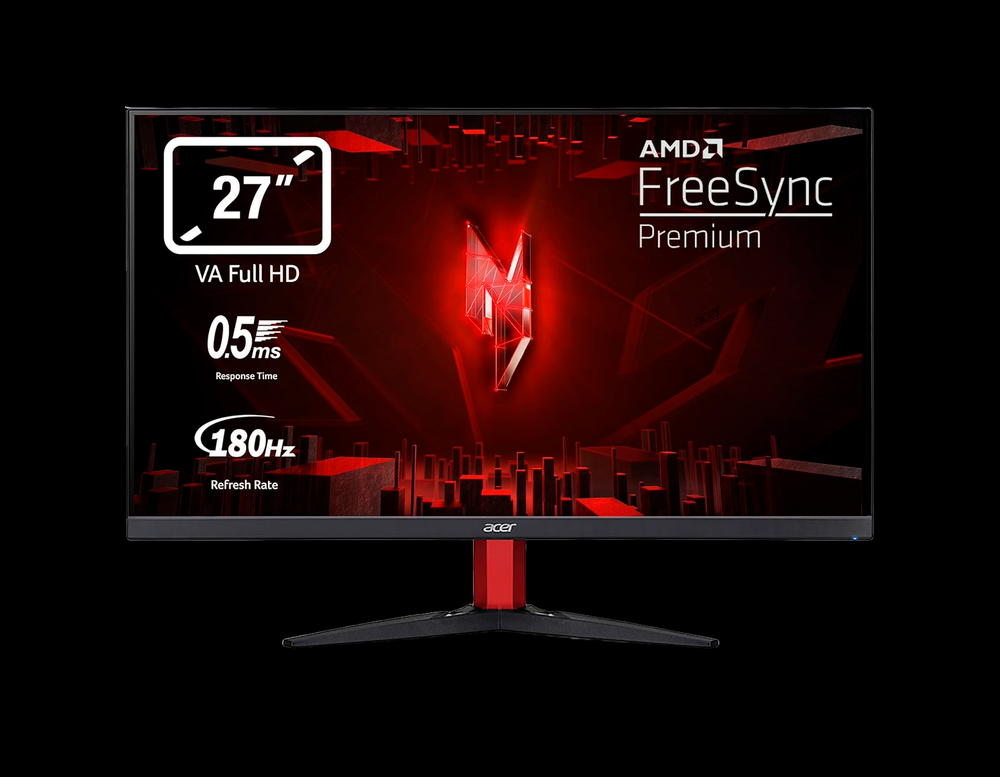
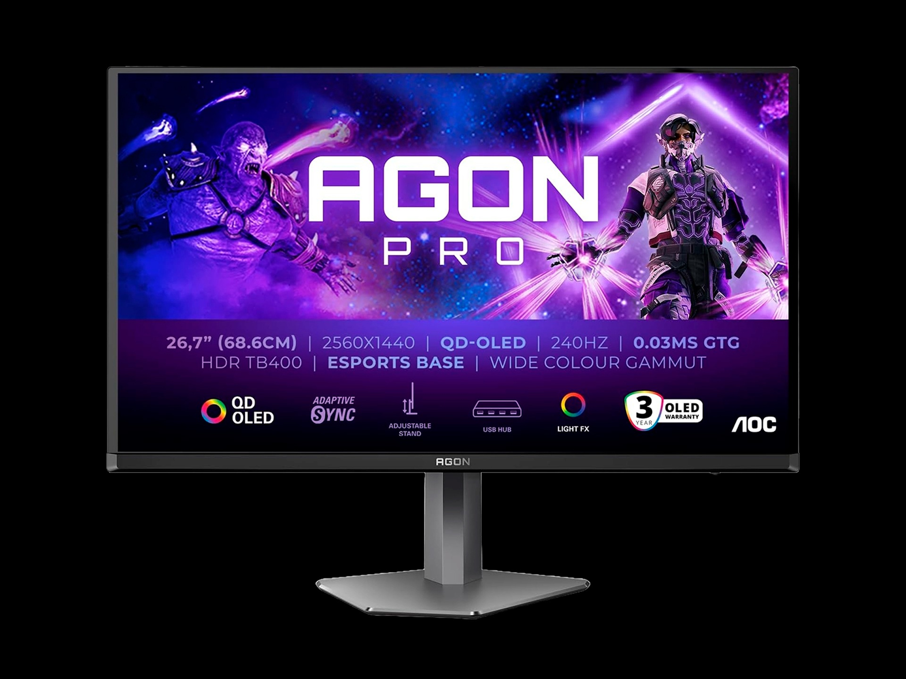

La qualità dell'immagine dipende dal tipo di pannello LCD o OLED utilizzato. Ognuno ha i suoi pro e contro.

Velocità pura a discapito della qualità visiva.
Accuratezza cromatica e ampi angoli di visione.


Contrasto e neri profondi.
Qualità visiva perfetta e velocità istantanea.
